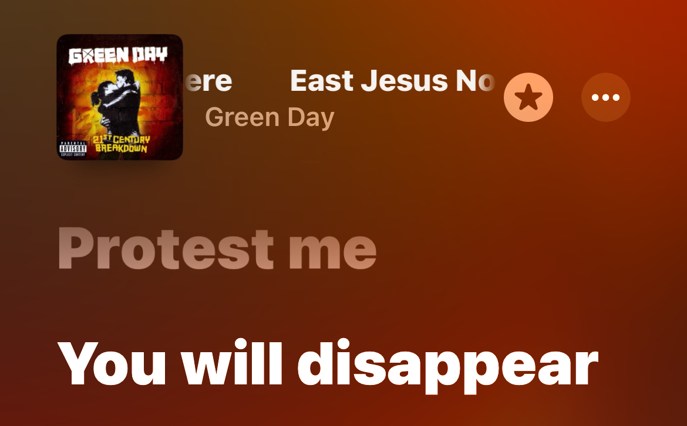
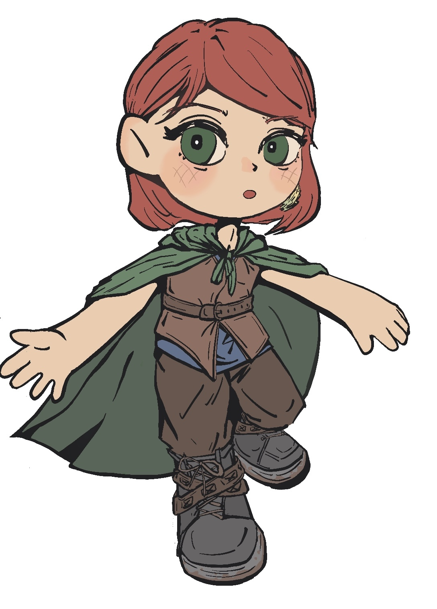

厦门我是真讨厌你，你特别讨厌。
我从来不知道一个人可以与一个城市产生互斥感，就像鱼跑到了咖喱里一样难受。我去过那么多城市，还从来没有一个城市能被我那么认真地讨厌过。你是不是也很讨厌我？毕竟互斥是相互的。
我特别讨厌你那莫名其妙从四面八方刮来的妖风。说真的，你有那么没眼力见吗？整理得好好的刘海一出门就是糊个满脸，好好叠穿的衣服你硬是要把没拉上拉链的两片帘子吹起来。你真是特烦。还有那个乐跑的风，我都懒得说。本来跑步就累，你还逆着方向吹，根本跑不动！烦死你了。
还有你这的物价。来之前我还安慰一下自己，好歹是沿海城市呢，能便宜地吃到很多海鲜啦。结果你就是这么迎接我的！用你难吃的食物和奇高无比的物价。到底是一座怎么样的城市会觉得二三十一碗面是正常的啊！你看看人家漳州，海鲜又便宜又好吃，你看看你，你看看你！唉，算了，再说到这个死“旅游城市”的title，你年年宜居城市榜单排倒数真不是没有原因的！街边到处都是纪念品店，感觉走在路上根本感受不到城市的灵魂、文化，触碰到的只有模板化的的宰客店。（说到宰客店，我想起之前打的士，在车上跟司机抱怨“厦门到处都是宰客店”，司机说“哪有什么宰客店，你不付钱不就不会被宰了”。你看看你厦门，就连你的的士司机都那么不友善！那可是的士司机呀。而且它又不明码标价，价格还偷偷超出正常价格，想要悄咪咪宰我一笔，这还不算宰客吗！）无聊的城市，难吃的城市，没地铁的城市（几乎没有）。我讨厌你，厦门。
嗯……我肯定还有其他讨厌你的点，因为我天天都在骂你。但我刚刚吃完饭很撑，所以暂时想不起来。
哦！我今天在楼下买的椰蓉巧克力冰淇淋，上面一点椰蓉没吃到，全是冰渣！满嘴的冰渣！太恶心了，难吃。而且我吃完之后才发现，不知道从哪里掉出来的椰蓉，撒了满地毯，我又清理了半天。你真是烦死了。
还有你这的人，时间观念也太差了！说好约几点就是几点啊，不要给我提早到，也不要给我延迟到，真的很烦。你那个中介也这样，还有安宽带的也是。
你看你拽成这样，大家巡演或各种全国活动还不都是不喜欢来你这？待厦门比待广寒宫还糟心！真是离了家才发现家里好，广州把我养得多开心啊，实在不行旁边还有一个深圳去承包各种娱乐活动。你呢？你呢？？？你自己看看你自己吧，我都懒得说你。
你看，不是我故意挑你刺，但是你就是有那么多让人讨厌的地方（更别提我还没列举完）。不过，我前面说到“根本感受不到城市的灵魂”，你也别误会，我也不是说你没有吧，可能我们就是不对眼。我看还是有很多人喜欢你的，比如说姚玥、谢雨希，我看她们朋友圈，她们就去了好几次厦门，并对你大加赞赏呀！还有李欣诺，虽然我在她面前极力抹黑你，但显然，你还是给她留下了一点好印象，比如说你的公交车？她说风景很好。
但我也没什么资格骂你吧，这样显得我有点忘恩负义了，毕竟是你收留了我。是我自己没考好，想去的志愿城市都去不了，才窝囊地收拾行李来了你这。所以虽然不喜欢你，但我也说一句谢谢吧，说到底，在这里也还是有一点开心的事情发生的。
比如说之前晚上和诺诺骑单车回民宿遇上的泉州还是福州的大叔，很和善地跟我们一起踩单车踩了一路，还给我们带路了。还有我找房子时候遇上的最后那个中介，她总是叫我“妹妹”，让我感觉很亲切。而且她还告诉了我一些租房要注意的事情。还有……还有你的海，确实还不错吧。
但是以上我说的这些优点，都是只在某个时刻存在的开心！总而言之，言而总之，in conclusion, 你还是讨厌。
你这里没有我的朋友，没有我的亲人（没错这都是你的错），也没有让人吃了感觉心里暖暖的美食；只有讨厌的近代史老师，超级无敌多的游客和 烦 死 人 的 妖 风 。冰冷的恶心城市，刘思莹还说你不适合做成刺身，说什么呢！你可太适合做刺身了。刚好，我讨厌吃刺身，也讨厌你。所以滚蛋吧，讨厌的海边刺身城市。（我好像没有资格在你的地盘让你滚蛋，但whatever）
如果你想要我原谅你，你可以：
1、邀请我喜欢的乐队来你这巡演
2、邀请我想要看的音乐剧来你这巡演
3、让我莫名其妙地在你这里暴富（且没有任何不良后果）
还有，不准反驳我。

附上前段时间画的小人一枚
